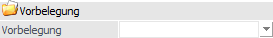
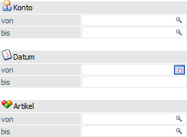
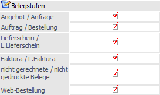

In dem ersten Bereich kann zunächst selektiert werden, welche Belege (bzw. welche Artikel in den Belegen) umgestellt werden sollen.

Folgende Einstellungen und Selektionskriterien stehen zur Verfügung:
Vorbelegung

Ø Vorbelegung
Über die Vorbelegung können die Einstellungen einer Belegumstellung (Selektion und Umstellungsdaten) gespeichert werden. Wurde bereits eine Vorbelegung definiert, kann diese über die Auswahlliste aufgerufen werden. Wurde noch keine Vorbelegung definiert, dann kann diese durch eine Eingabe im Feld "Vorbelegung" angelegt werden. Wurden alle Eingaben durchgeführt, wird die Vorbelegung durch Drücken der F5-Taste bzw. des Buttons "Ok" gespeichert.
Selektion

Ø Konto von / bis
An dieser Stelle kann für die Belegumstellung eine Einschränkung auf einen bestimmten Kunden- / Lieferantenkreis bzw. Kunden / Lieferanten erfolgen.
Ø Datum von / bis
Hier kann eine Einschränkung auf einen Datumsbereich vorgenommen werden. Bei gedruckten Belegen wird als Datum das Belegdatum der letzten gedruckten Stufe, bei nicht gedruckten Belegen das Erstellungsdatum berücksichtigt.
Ø Artikel von / bis
Mit Hilfe dieser Felder kann eine Einschränkung auf bestimmte Artikel erfolgen, für welche die Belegumstellung erfolgen soll. Wird hier auf Artikel eingeschränkt, so werden nur mehr jene Belege angezeigt, in denen diese Artikel enthalten sind.
Werden anschließend zur Umstellung Änderungen des Belegkopfs definiert (mit Ausnahme der Preisfindung), so hat dies Auswirkung auf den gesamten Beleg! Änderungen der Belegmitte betreffen nur jene Artikel der Selektion.
Beispiel
Es erfolgt eine Selektion nach Artikel "30002 - Panther Sportschuh "Basketball"". Ein Angebot beinhaltet die folgenden Artikel:
ü 30001 - Panther Sportschuh "Streetball"
ü 30002 - Panther Sportschuh "Basketball"
ü 30003 - Panther Sportschuh "Tennis"
Die Umstellung der Rechnungsadresse hat Auswirkung auf den gesamten Beleg. Eine Umstellung der Preisliste von "1" auf "2" wird im Belegkopf geändert. Die Preisfindung wird hingegen nur für Artikel "30002" durchgeführt. Die Umstellung des Erlöskontos von "4000" auf "4001" wird nur für Artikel "30002 - Panther Sportschuh "Basketball"" durchgeführt.
Belegstufen

An dieser Stelle kann definiert werden, welche Belege welcher Belegstufe(n) berücksichtigt werden sollen.
Ø Angebot / Anfrage
Es werden alle Angebote / Anfragen berücksichtigt, die in keiner höheren Belegstufe (Auftrag / Bestellung, Lieferschein / L.Lieferschein, Faktura / L.Faktura) gerechnet wurden.
Ø Auftrag / Bestellung
Es werden alle Aufträge / Bestellungen berücksichtigt, die in keiner höheren Belegstufe (Lieferschein / L.Lieferschein, Faktura / L.Faktura) gerechnet wurden.
Ø Lieferschein / L.Lieferschein
Es werden alle Lieferscheine / L.Lieferscheine berücksichtigt, die in keiner höheren Belegstufe (Faktura / L.Faktura) gerechnet wurden.
Ø Faktura / L.Faktura
Es werden alle Fakturen / L.Fakturen berücksichtigt.
Ø nicht gerechnete / nicht gedruckte Belege
Es werden alle nicht gerechneten / nicht gedruckten Belege berücksichtigt.
Ø Web-Bestellung
Es werden die Belege, die aus der WinLine WEBEdition kommen, berücksichtigt. Damit können die in der WEB Edition erfassten Belege z.B. in Aufträge mit einem bestimmten Druckstatus umgewandelt werden.